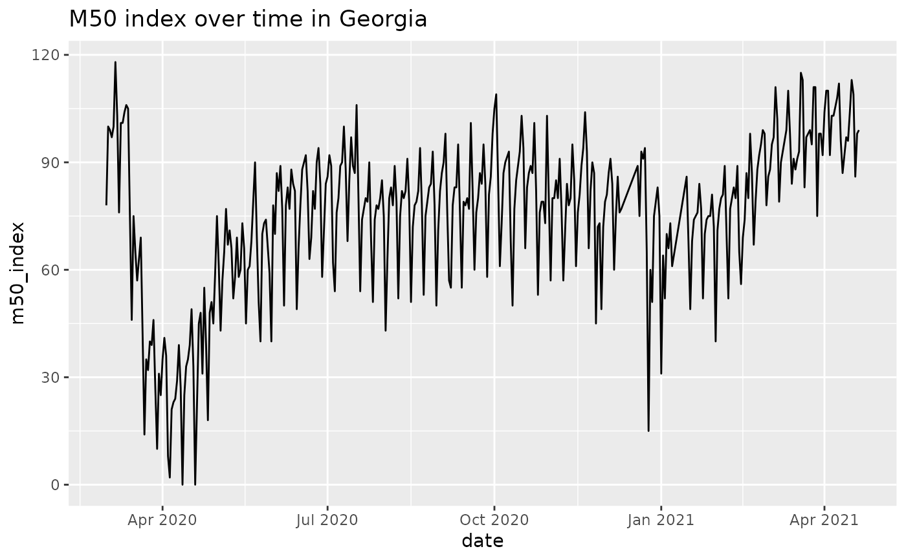
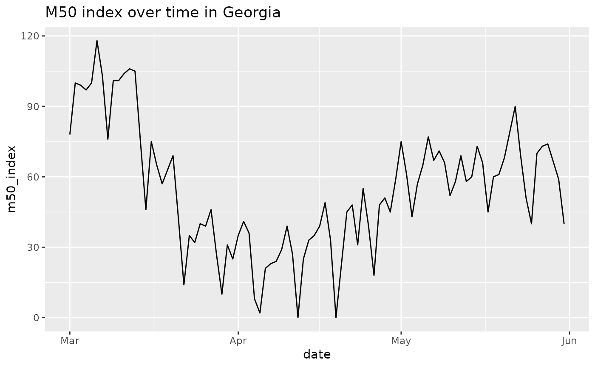
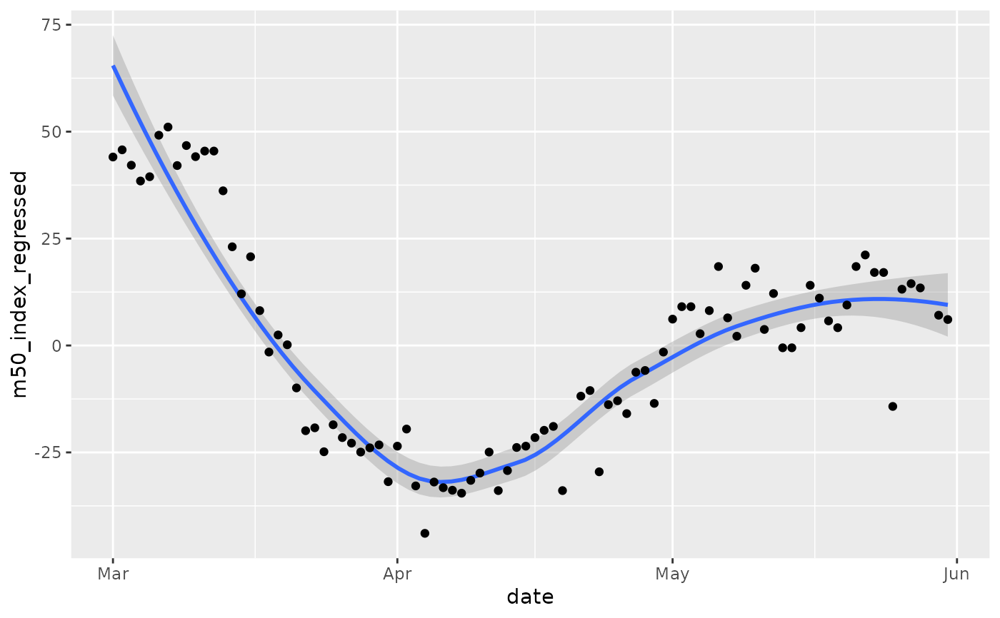
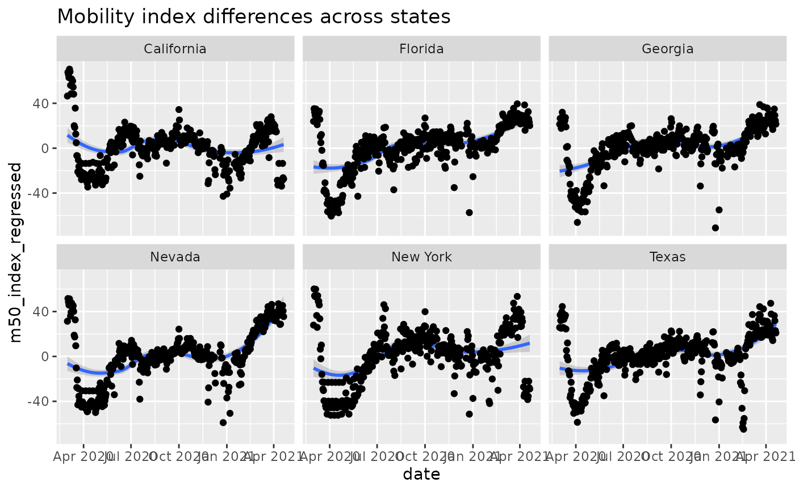

R/descartes_mobility.R
descartes_mobility_data.RdDescartes Labs quantify the level of human mobility in the US at the state level. Their methodology looks at a collection of mobile devices reporting consistently throughout the day. They calculate the maximum distance moved in kilometers (excluding outliers) from the first reported location. Using this value, they calculate the median across all devices in the sample to generate a mobility metric for selected states.
descartes_mobility_data()country_code: ISO 3166-1 alpha-2 code.
admin_level: 0 for country, 1 for admin1, 2 for admin2 granularity.
admin1: GeoNames ADM1 feature name for the first-order administrative division, such as a state in the United States.
admin2: GeoNames ADM2 feature name for the second-order administrative division, such as a county or borough in the United States.
fips: FIPS code, a standard geographic identifier, to make it easier to combine this data with other data sets.
samples: The number of samples observed in the specified region.
m50: The median of the max-distance mobility for all samples in the specified region.
m50_index: The percent of normal m50 in the region, with normal m50 defined during 2020-02-17 to 2020-03-07.
Creative Commons Attribution (CC BY 4.0), see https://github.com/descarteslabs/DL-COVID-19
Other data-import:
acaps_government_measures_data(),
acaps_secondary_impact_data(),
apple_mobility_data(),
beoutbreakprepared_data(),
cci_us_vaccine_data(),
cdc_aggregated_projections(),
cdc_excess_deaths(),
cdc_social_vulnerability_index(),
coronadatascraper_data(),
coronanet_government_response_data(),
cov_glue_lineage_data(),
cov_glue_newick_data(),
cov_glue_snp_lineage(),
covidtracker_data(),
ecdc_data(),
econ_tracker_consumer_spending,
econ_tracker_employment,
econ_tracker_unemp_data,
economist_excess_deaths(),
financial_times_excess_deaths(),
google_mobility_data(),
government_policy_timeline(),
jhu_data(),
jhu_us_data(),
kff_icu_beds(),
nytimes_county_data(),
oecd_unemployment_data(),
owid_data(),
param_estimates_published(),
test_and_trace_data(),
us_county_geo_details(),
us_county_health_rankings(),
us_healthcare_capacity(),
us_hospital_details(),
us_state_distancing_policy(),
usa_facts_data(),
who_cases()
Other mobility:
apple_mobility_data(),
google_mobility_data()
library(dplyr)
res = descartes_mobility_data()
colnames(res)
#> [1] "date" "iso2" "admin_level" "admin1" "admin2"
#> [6] "fips" "samples" "m50" "m50_index"
dplyr::glimpse(res)
#> Rows: 1,074,614
#> Columns: 9
#> $ date <date> 2020-03-01, 2020-03-02, 2020-03-03, 2020-03-04, 2020-03-0…
#> $ iso2 <chr> "US", "US", "US", "US", "US", "US", "US", "US", "US", "US"…
#> $ admin_level <dbl> 1, 1, 1, 1, 1, 1, 1, 1, 1, 1, 1, 1, 1, 1, 1, 1, 1, 1, 1, 1…
#> $ admin1 <chr> "Alabama", "Alabama", "Alabama", "Alabama", "Alabama", "Al…
#> $ admin2 <chr> NA, NA, NA, NA, NA, NA, NA, NA, NA, NA, NA, NA, NA, NA, NA…
#> $ fips <chr> "00001", "00001", "00001", "00001", "00001", "00001", "000…
#> $ samples <dbl> 133826, 143632, 146009, 149352, 144109, 141491, 141163, 13…
#> $ m50 <dbl> 8.331, 10.398, 10.538, 10.144, 10.982, 13.024, 11.373, 8.5…
#> $ m50_index <dbl> 79, 98, 100, 96, 104, 123, 107, 80, 103, 103, 103, 111, 11…
# plot data for Georgia
library(ggplot2)
# this gets us state-level data
GA = res %>% dplyr::filter(admin1=='Georgia' & admin_level==1)
ggplot(GA, aes(x=date, y=m50_index)) + geom_line() + ggtitle('M50 index over time in Georgia')

#limit to dates of interest around time that GA is reopening
GA = GA %>% dplyr::filter(date>as.Date('2020-01-01') & date < as.Date('2020-06-01'))
ggplot(GA, aes(x=date, y=m50_index)) +
geom_line() +
ggtitle('M50 index over time in Georgia')

# Obviously, there are day-specific effects, so use
# R to "regress out" the effects of day of week to better
# observe trend.
GA = GA %>% dplyr::mutate(dow = lubridate::wday(date, label=TRUE))
lmfit = lm(m50_index ~ dow, data = GA)
# We are interested in the residuals, or
# the variation in the data not explained by
# the day of the week.
GA$m50_index_regressed = residuals(lmfit)
ggplot(GA, aes(x=date, y=m50_index_regressed)) +
geom_smooth() +
geom_point()
#> `geom_smooth()` using method = 'loess' and formula 'y ~ x'

# Compare states
states = c("New York", "California", "Nevada",
"Texas", "Georgia", "Florida")
ST = res %>%
dplyr::filter(admin1 %in% states & admin_level==1) %>%
dplyr::mutate(dow = lubridate::wday(date, label=TRUE))
lmfit = lm(m50_index ~ dow + admin1, data = ST)
ST$m50_index_regressed = residuals(lmfit)
ggplot(ST, aes(x=date, y=m50_index_regressed)) +
geom_smooth() +
geom_point() +
facet_wrap('admin1', nrow=2) +
ggtitle('Mobility index differences across states')
#> `geom_smooth()` using method = 'loess' and formula 'y ~ x'
